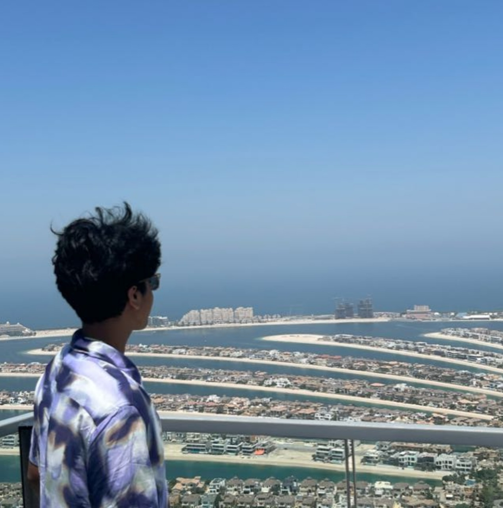

Akash Shrivas Ravishankar

Summary
I'm a hardworking and sincere student with interests in Web, App and Game development.
Education
- The PSBB Millennium School OMR - Kindergarten(2010-2013)
- The PSBB Millennium School, Gergumbakkam- Grade I-III(2013-2015)
- Phoenix Greens School of Learning, Kokapet - Grade III(2015-2016)
- The PSBB Millennium School, Gergumbakkam- Grade III-VI(2016-2018)
- Podar International School, Powai - Grade VI-X(2018-2023)
- R.N. Podar School, Powai - Grade X-XII(2023-2025)
- Bachelor of Technology in Computer Science and Engineering, Manipal Institute of Technology(2025-2029)
Work Experience
National Social Scheme(NSS)
- Visited ASARE, a rehabilitation centre for patients with personality disorders. Helped and aided the patients
- Led a team of 25 members on cleaning The Malpe Beach, on 20th of September, The International Coastal Clean-up Day
Skills
- Leadership ⭐⭐⭐
- Web Development ⭐⭐
- Video Editing ⭐⭐⭐
Awards and Certifications
- U-10 Don Bosco Cricket Tournament(2014)
- NSS Beach Cleaning Volunteer(2025)
Other
Hobbies
Contact